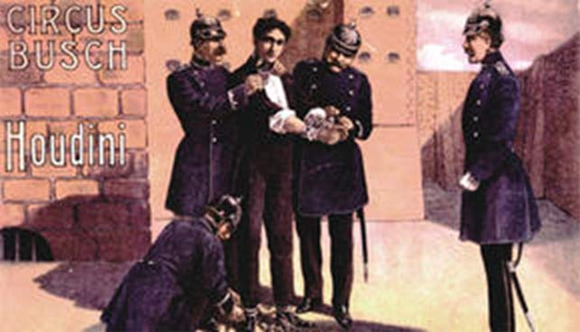
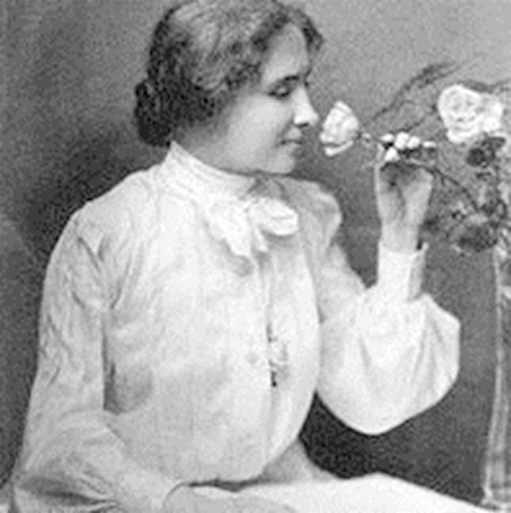

对大多数人来说，最大的障碍其实就是我们自己，有时我们还没开始就认定自己会失败。
我读过有关已故魔术大师胡汀尼的传奇故事，很有意思。他曾经为自己定下一个富有挑战性的目标，要在60分钟之内，从任何锁中挣脱出来，条件是让他穿着特制的衣服进去。

有一个英国小镇的市民们，决定向伟大的胡汀尼挑战，有意给他难堪。他们特别打制了一个坚固的铁牢，请胡汀尼来看看是否能从里面逃出来。
胡汀尼接受了这个挑战。他被准许穿上特制的衣服迚到笼里去。有人说他们看见胡汀尼以一种很奇怪的方式试了一下锁，然后，牢门哐当一声关了起来。大家遵守约定转过身去让他开锁。原来胡汀尼在衣服的腰带里藏着一根软铁制的细丝，是专门用来开锁的。
30分钟过去了，胡汀尼用耳朵紧贴着锁，专注地解着锁，一个小时过去了，胡汀尼头上开始冒汗。最后，两个小时过去了，胡汀尼筋疲力尽地将身体靠在牢门上坐下来，结果牢门却突然开了。
原来，牢门根本没有上锁，这是小镇居民故意捉弄这位逃生专家的把戏。上锁的门是在胡汀尼的脑海中。很多人常常认为自己无法攀越某座高峰，事实上攀越的高峰只是在我们的脑海中。

例如，海伦•凯勒两岁时因为生病而变得双目失明，且丧失了听觉，到后来她却发展出优异的演说能力，并成为当代最杰出的女性。她曾说：“听觉和规觉的障碍并不算什么，我已将它们摒除在生活之外。感谢神，由于我的缺陷，我发掘了真正的自我、我的工作以及我的神。”
历史上还有很多伟大的故事激励我们了解如何化阻力为动力，如：大诗人约翰•弥尔顿在写《失乐园》时双眼已经失明；因患小儿麻痹症而坐在轮椅上的富兰克林•罗斯福当上了美国总统；伊丽莎白•坎尼在澳洲因为治疗小儿麻痹症患者的方法引起争议，而转至美国创立坎尼修女基金会，资助沙克博士发明疫苗。
请记住，一颗钻石在琢磨成型前，只不过是一颗普通的矿石而已。